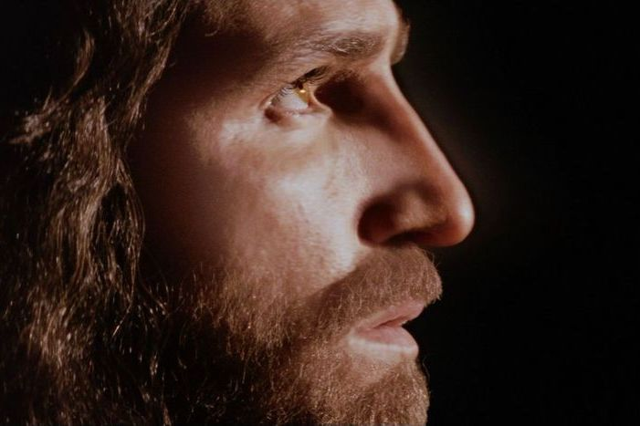

31 JAN 18
23

Jim Caviezel: Sequência de A Paixão de Cristo
será “o maior filme da história”
Caviezel confirmou que interpretará Jesus de Nazaré neste novo
filme de Gibson que tratará sobre a ressurreição do Senhor.
Sobre isso, o ator disse a ‘USA Today’ que “existem coisas
que não posso dizer, pois chocarão a audiência. É ótimo, fiquem ligados”.
“Não vou dizer aonde ele [Gibson] vai com isso, mas posso
revelar que o filme será o maior da história.
É bom nesse nível”, acrescentou.